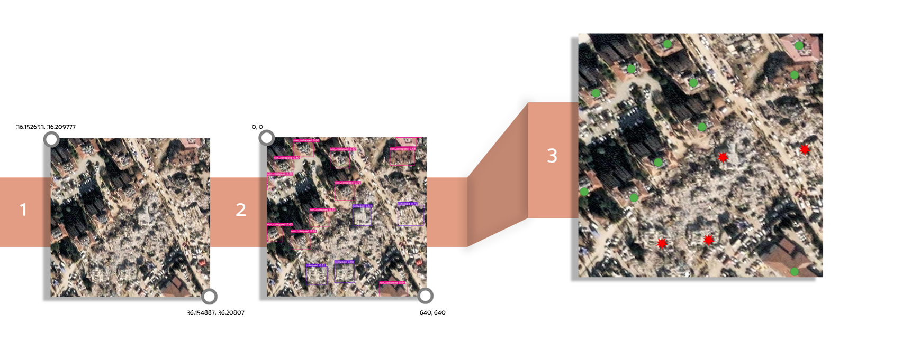

In this section, we outline the methodology employed for deriving geographic coordinates from input data within the InferenceVision framework. This methodological approach combines advanced techniques in satellite image analysis, object detection, and geographic coordinate calculation to enable precise geospatial analysis and visualization. The methodology consists of three key stages:
The target Coordinate Reference System (CRS) is WGS 84, representing a geographic coordinate system. Converting to this CRS standardizes the data. We use Nearest Neighbor interpolation, which can result in a blocky appearance. Transformed coordinates are precise to 9 decimal places (as default). The transformation is expressed as:
GEPSG:4326 = transform(Gdataset, CRSdataset)
Then, we extract polygon coordinates, defining the geographical extent with top-left (TL) and bottom-right (BR) corners as reference points for computing the geographic coordinates of normalized centers.
The center coordinates of detected objects are derived from the bounding boxes surrounding them. These bounding boxes are defined by the edge coordinates, specifically the minimum and maximum values for both the x and y axes: xmin, ymin (the bottom-left corner) and xmax, ymax (the top-right corner). The center of each object is then calculated as the midpoint between these edge coordinates, providing the precise geographic location for each detected object.
(xcenter, ycenter) = (xmin + xmax) / 2, (ymin + ymax) / 2
The centroids of bounding boxes are then normalized to convert pixel coordinates into a standard format:
Nx = xcenter / W
Ny = ycenter / H
Where:
In this final step, geographic coordinates are determined by mapping the normalized center coordinates and the corner coordinates of the extracted polygon. This process involves translating the geometric data from image space to real-world geographic coordinates, ensuring accurate georeferencing of the detected objects.
lat = latTL + (latBR - latTL) × Nx
lon = lonTL + (lonBR - lonTL) × Ny
Where:
The models used for object detection in this framework are built using the Ultralytics library, which provides state-of-the-art implementations for training and deploying deep learning models, such as YOLO (You Only Look Once). By leveraging the Ultralytics library, we ensure that the models are optimized for high accuracy and performance, making them well-suited for processing high-resolution satellite images and detecting objects within complex geospatial data. The input image must have a CRS set to ensure accurate geographic coordinate calculation.
For detailed instructions on how to use this system within a Jupyter Notebook environment, please refer to the usage guide.